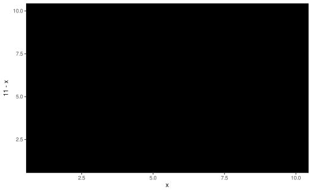

operations can be composed together to form chains of operations, which when multiplied by (applied to) layer-like objects, return modified layer-like objects. In contrast to operation_products, compositions of operations are not distributive over sums of operations or layer-like objects.
Value
An operation.
Details
Operation composition is achieved through function application, typically
using the pipe operator (|>); e.g. operation1 |> operation2.
The output of composing ggblend operations depends on the types of objects being composed:
If you compose an operation with an operation, they are merged into a single operation that applies each operation in sequence, without distributing over layers.
If you compose an operation with a layer-like object, that operation is applied to the layer, returning a new layer-like object. The operation is applied to the layer as a whole, not any sub-parts (e.g. sub-layers or graphical objects).
Examples
library(ggplot2)
# composing operations together chains them
adjust(color = "red") |> blend("multiply")
#> <operation>: adjust(colour = "red") |> blend("multiply")
# unlike multiplication, composition does not follow the distributive law
mult_op = (adjust(aes(y = 11 -x), color = "skyblue") + 1) * blend("multiply")
mult_op
#> <operation>: (adjust(aes(y = ~11 - x), colour = "skyblue") * blend("multiply") + blend("multiply"))
comp_op = (adjust(aes(y = 11 -x), color = "skyblue") + 1) |> blend("multiply")
comp_op
#> <operation>: (adjust(aes(y = ~11 - x), colour = "skyblue") + 1) |> blend("multiply")
# multiplication by a geom returns a modified version of that geom
data.frame(x = 1:10) |>
ggplot(aes(x = x, y = x)) +
geom_line(linewidth = 10, color = "red") * comp_op
